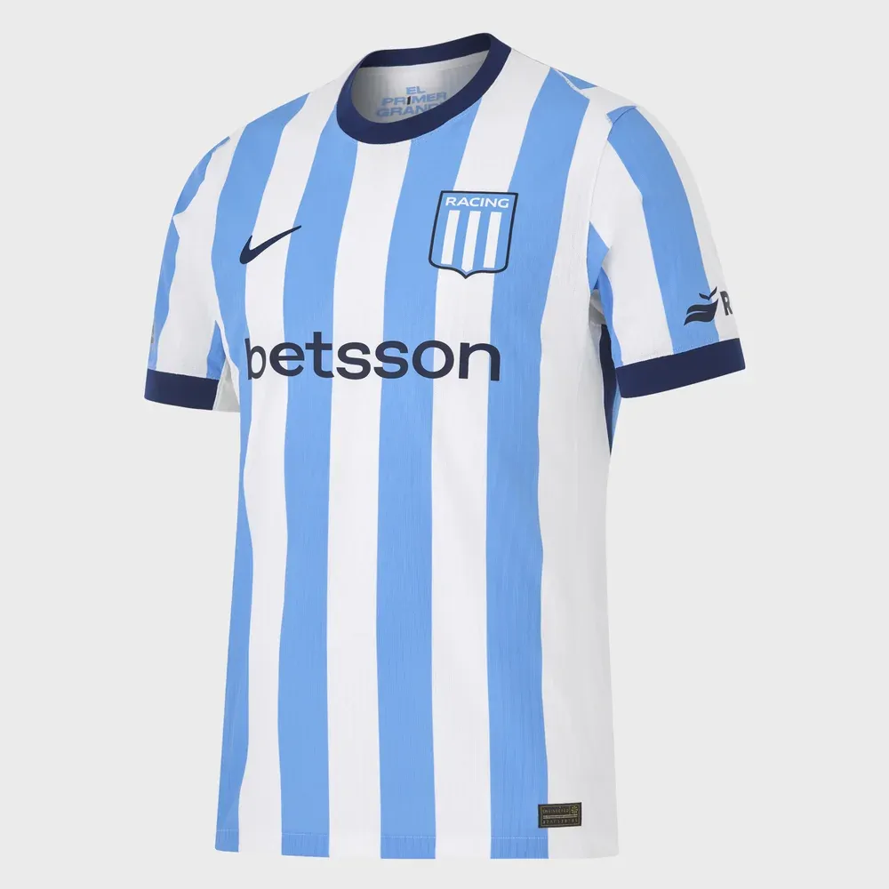

TitularCamiseta Titular Pro
Las clásicas rayas celestes y blancas con escudo al frente y detalles en azul marino. Pensada para alentar desde la tribuna o jugar en la cancha.
$179.999
Añadir al carritoDescubre el mejor equipamiento deportivo. En "El Lugar del Fútbol" te ofrecemos la mejor indumentaria para que vivas tu deporte favorito al máximo, ya sea dentro de la cancha, entrenando duro o alentando desde la tribuna.
Ver catálogoNuestra tienda se caracteriza por ofrecer una experiencia libre de sesgos. Mantenemos una imagen de completa neutralidad ante nuestros compradores, sin afiliarnos a ninguna parcialidad. Nuestro objetivo es que encuentres lo que buscas garantizando el mejor servicio de venta online, centrado única y exclusivamente en la pasión por el fútbol.
Explora nuestra selección. Próximamente habilitaremos la categorización por camisetas y accesorios.

TitularLas clásicas rayas celestes y blancas con escudo al frente y detalles en azul marino. Pensada para alentar desde la tribuna o jugar en la cancha.
$179.999
Añadir al carrito Suplente
Suplente
Un diseño azul marino liso con puños celestes y escudo al frente. Elegancia sobria para los días de visitante.
$99.999
Añadir al carrito Alternativa 2026
Alternativa 2026
Tercera equipación con rayas verticales negras y amarillas. Un look audaz y diferente para destacarte en cada partido.
$119.999
Añadir al carrito